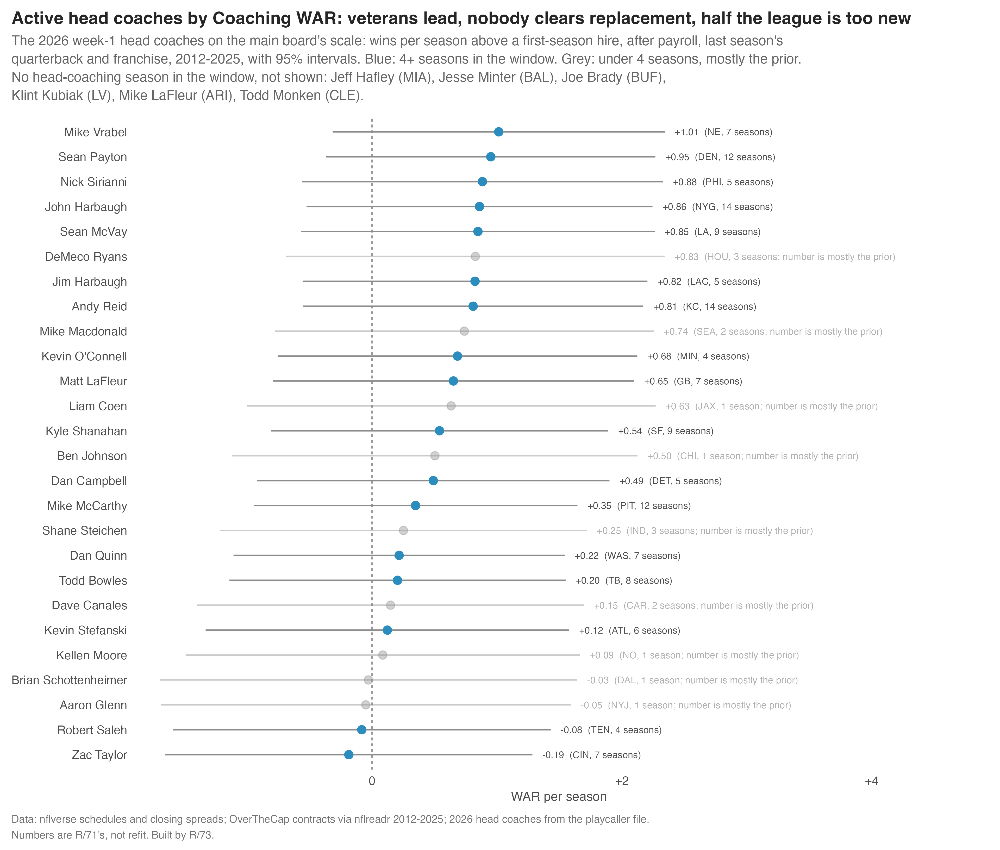
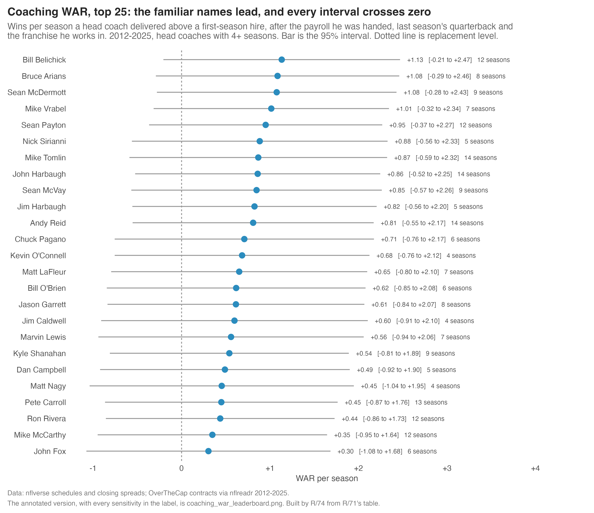
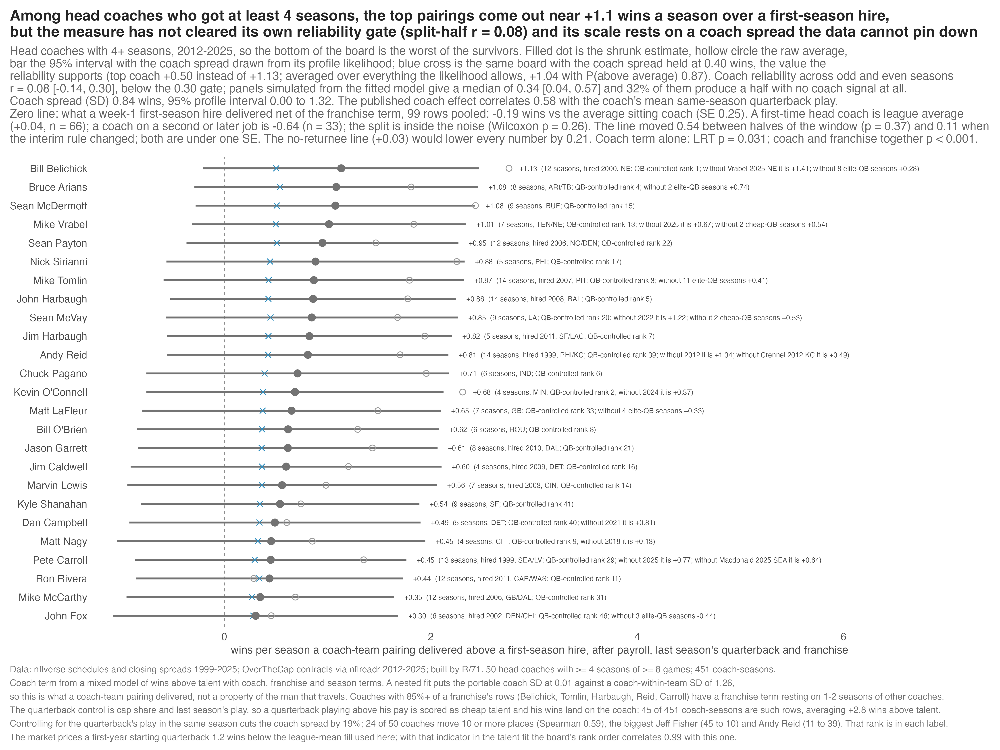
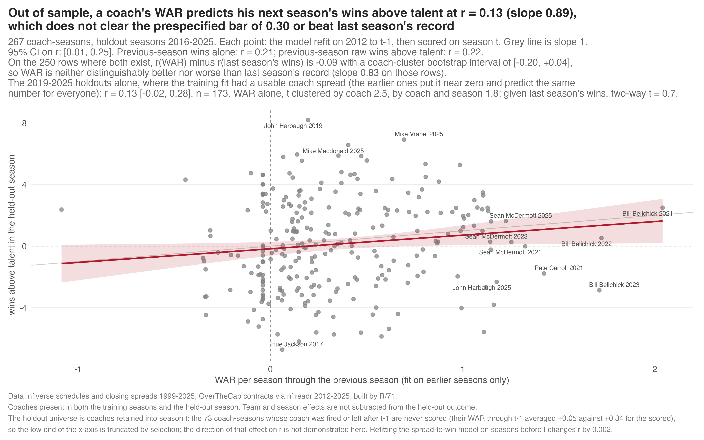
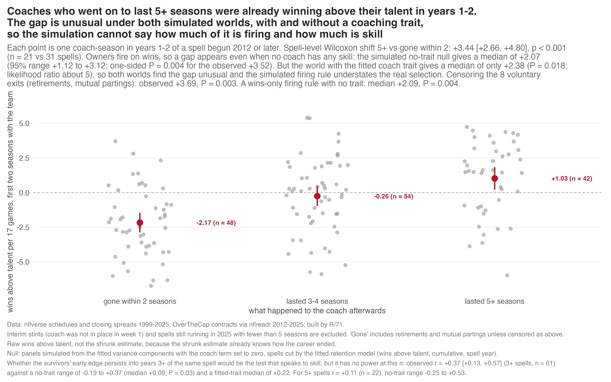

How many wins is a head coach worth?
One number per coach: wins per season added above what a fresh hire would have delivered, after the payroll he was handed, last season's quarterback, and the franchise he works in. With the uncertainty left on, which turns out to be the story.
The familiar names are at the top. None of them is clear of the pack.
How talent is controlled, in one breath
Three things, all measured before the season's games are played: the payroll of the top 25 contracts as a share of the cap, how much of the cap the starting quarterback takes, and how well that quarterback played the season before (EPA per dropback). Together they explain 36% of what the betting market expected from each team. A franchise term in the model absorbs whatever is persistent about the building: owner, front office, scouting. What is not controlled: roster quality beyond what payroll captures (Madden ratings would add to it but only exist from 2017, so they are a sensitivity, not a control), and the quarterback's play in the same season, which is the biggest hole and the reason the table carries a "QB-controlled rank" beside the main one.
What it says. Over 2012-2025, the head coaches whose teams won the most above what their payroll, last season's quarterback and franchise predicted are Belichick (+1.13 wins a season), Bruce Arians (+1.08), Sean McDermott (+1.08), Mike Vrabel (+1.01) and Sean Payton (+0.95). The bottom is Dennis Allen (-0.36), Lovie Smith (-0.30), Doug Marrone (-0.25), Gus Bradley (-0.25) and Mike McCoy (-0.23). That ordering is about what a fan would guess, which is a point in its favour. The honest part is everything around the point estimates: Belichick's interval runs from -0.21 to +2.47, nobody's lower bound clears zero, the number does not predict next season better than last season's win total does, and a coach and his quarterback cannot be cleanly pulled apart. The measure says who won above their resources. It cannot yet prove that the man, rather than the pairing of man, quarterback and building, is the reason.
Wins above a first-season hire, per season
Take a coach's team in one season. The closing point spreads on its games imply a number of wins the betting market expected. Part of that expectation is explained by things the coach did not create: the payroll of the top 25 contracts, how much of the cap the starting quarterback eats, and how well that quarterback played the season before. Call that part talent. What the team actually won minus talent is wins above talent, and it is the raw material for everything on this page. Everything is scaled to 17 games so seasons of different lengths add up.
Wins above talent splits cleanly into two pieces. The premium is what the market credited the team beyond its priced talent before kickoff; a coach with a reputation gets some of that, but so does a cheap quarterback playing above his contract and any talent the payroll control cannot see. The surprise is what the team did beyond the spread once the games were played. The two add up to wins above talent exactly, though the shrunk versions of each shown in the table come from separate fits and can differ from the total by up to 0.26 wins (Jim Schwartz is the widest case).
The coach's number comes from a mixed model of wins above talent with three random terms: coach, franchise and season. The franchise term soaks up the owner, the front office and anything about a building that outlasts the man in it. The coach term is identified by coaches changing teams and teams changing coaches. Because it is a random effect it is shrunk toward zero, and a short career is shrunk hardest. That is why the raw averages (the hollow circles in the chart) sit to the right of the filled dots.
WAR is the coach effect minus a replacement line, explained next. One unit is one win per season over 17 games.
A replacement coach is the coach you actually get
In baseball, replacement level is the freely available player. Here it is the coach a franchise hires when it does not keep the one it has. So the replacement line is measured, not assumed: the average of what first-season head coaches delivered, net of the franchise and season terms, on the 99 first-season rows in the window where the coach was in place in week 1. Interim coaches who took over midseason are a different thing (their first-season rows average -1.20 wins) and are left out.
That line comes out at -0.19 wins against the average sitting coach, with a standard error of 0.25. So a new hire is slightly worse than the average incumbent, but not by much, and not by an amount the data can pin down. Because the line is close to zero, WAR and wins above average are nearly the same thing here; the difference is 0.19 for everybody.
Two details the skeptics pushed on, both true. First, the pooled line hides a split: a first-time head coach averages +0.04 (n = 66, in other words league average), while a coach on his second or later job averages -0.64 (n = 33). The difference has a Wilcoxon p of 0.26, so it is inside the noise, and the pooled line was kept; the first-timers-only line (+0.03) would lower every WAR by 0.21 and is carried as a column in the CSV. Second, the line drifts across the window: +0.08 in 2012-2018, -0.45 in 2019-2025. That gap is 0.54 wins, but its standard error is 0.59 (p = 0.37), and a board built with a separate line for each half moves nobody in the top 12 (rank correlation 0.922 with the main board; the biggest mover is Kliff Kingsbury, 35 to 23).
Payroll, last season's quarterback, and the building. Not the roster.
The talent control explains 36% of the market's expectation (R2 0.359 on 451 coach-seasons). It is payroll plus the quarterback's cap share plus his EPA per dropback the season before. It is deliberately the previous season's quarterback, on the argument that a coach shapes the quarterback he has; the cost of that choice is that a quarterback playing better than he did last year, or better than he is paid, counts for the coach.
That cost is not small. Same-season quarterback play explains 39% of the variation in wins above talent on its own (+1.87 wins per standard deviation), and the market premium correlates 0.61 with it. Across the 50 eligible coaches, the published coach effect correlates 0.58 with the average same-season quarterback play the coach had. When the quarterback's same-season play is added as a control, the spread between coaches shrinks by 19%, the rank correlation with the main board falls to 0.59, only 5 of the top 10 survive, and 24 of 50 coaches move 10 or more places. Jeff Fisher goes from 45th to 10th; Andy Reid from 11th to 39th. That rank is printed for every coach in the table as "QB-controlled rank". The two boards are not upper and lower bounds on anything; they are two different questions, and the page shows both.
Roster quality beyond payroll is not controlled. Madden ratings, where they exist (2017 onward), still predict wins above talent at +0.68 wins per standard deviation after the payroll controls (t = 4.0). They were not put in the main model because a control that switches on mid-window would grade the same coach on two different scales. A version with Madden in the talent fit has a rank correlation of 0.981 with the main board and the same top 10 less one, so the ordering survives it, but the earlier wording "separated from his roster" did not, and it is gone.
The franchise term is the control that matters most for who is on top, and it is the one that can hurt the coaches who never left. A nested fit that asks how much of the coach effect travels with him across teams puts the portable part at 0.01 wins (95% interval 0.00 to 1.13) against a coach-within-team part of 1.26 (0.51 to 1.66). On this data the number is what a coach-team pairing delivered, not a trait that demonstrably moves with the man. Mike Tomlin and John Harbaugh are 100% of their franchise's rows in the window, Belichick is 86%, Reid 93%, Pete Carroll 86%; for those five the franchise term is set by one or two seasons of somebody else, and the table label on the chart shows what happens to their number when that other coach's season is dropped. Belichick without Mike Vrabel's 2025 New England season is +1.41 instead of +1.13; Reid without Romeo Crennel's 2012 Kansas City season is +0.49 instead of +0.81.
The 32 coaches on a sideline this season
Same numbers, same scale, filtered to the 2026 week-1 head coaches. Mike Vrabel leads the actives at +1.01, then Payton, Sirianni, John Harbaugh and McVay. Fourteen of the 32 have fewer than four seasons in the window, so their number is mostly the prior; six have never been a head coach in it.

Fifty head coaches with at least four seasons, 2012-2025

The annotated version: raw averages, the reliability-supported scale, and every sensitivity in the label

Click a column header to sort. "Seasons" counts seasons in the 2012-2025 window; coaches hired before 2012 are marked with their real hire year, since their early seasons are missing and veterans as a group average +0.19 more than in-window hires (p = 0.12). The interval is 95%, from a parametric bootstrap of the model's own prediction error with the coach spread drawn from its likelihood. Premium and surprise are the shrunk per-season components. "QB-controlled rank" is this coach's rank when the quarterback's same-season play is also removed. "P(above avg)" is the probability the coach's true effect is above the average sitting coach; nobody reaches 0.95.
| Rank | Coach | Seasons (teams) | WAR / season | 95% interval | Premium | Surprise | QB-controlled rank | P(above avg) |
|---|---|---|---|---|---|---|---|---|
| 1 | Bill Belichick | 12 (NE, hired 2000) | +1.13 | -0.21 to +2.47 | +0.89 | +0.07 | 1 | 0.92 |
| 2 | Bruce Arians | 8 (ARI/TB) | +1.08 | -0.29 to +2.46 | +0.50 | +0.28 | 4 | 0.91 |
| 3 | Sean McDermott | 9 (BUF) | +1.08 | -0.28 to +2.43 | +0.48 | +0.34 | 15 | 0.90 |
| 4 | Mike Vrabel | 7 (TEN/NE) | +1.01 | -0.32 to +2.34 | +0.22 | +0.35 | 13 | 0.91 |
| 5 | Sean Payton | 12 (NO/DEN, hired 2006) | +0.95 | -0.37 to +2.27 | +0.34 | +0.31 | 22 | 0.88 |
| 6 | Nick Sirianni | 5 (PHI) | +0.88 | -0.56 to +2.33 | +0.37 | +0.22 | 17 | 0.82 |
| 7 | Mike Tomlin | 14 (PIT, hired 2007) | +0.87 | -0.59 to +2.32 | +0.24 | +0.39 | 3 | 0.82 |
| 8 | John Harbaugh | 14 (BAL, hired 2008) | +0.86 | -0.52 to +2.25 | +0.61 | +0.04 | 5 | 0.85 |
| 9 | Sean McVay | 9 (LA) | +0.85 | -0.57 to +2.26 | +0.54 | +0.13 | 20 | 0.82 |
| 10 | Jim Harbaugh | 5 (SF/LAC, hired 2011) | +0.82 | -0.56 to +2.20 | +0.36 | +0.17 | 7 | 0.84 |
| 11 | Andy Reid | 14 (PHI/KC, hired 1999) | +0.81 | -0.55 to +2.17 | +0.29 | +0.28 | 39 | 0.84 |
| 12 | Chuck Pagano | 6 (IND) | +0.71 | -0.76 to +2.17 | +0.09 | +0.28 | 6 | 0.75 |
| 13 | Kevin O'Connell | 4 (MIN) | +0.68 | -0.76 to +2.12 | +0.09 | +0.29 | 2 | 0.78 |
| 14 | Matt LaFleur | 7 (GB) | +0.65 | -0.80 to +2.10 | +0.09 | +0.24 | 33 | 0.75 |
| 15 | Bill O'Brien | 6 (HOU) | +0.62 | -0.85 to +2.08 | +0.14 | +0.19 | 8 | 0.71 |
| 16 | Jason Garrett | 8 (DAL, hired 2010) | +0.61 | -0.84 to +2.07 | +0.34 | +0.09 | 21 | 0.73 |
| 17 | Jim Caldwell | 4 (DET, hired 2009) | +0.60 | -0.91 to +2.10 | +0.15 | +0.16 | 16 | 0.74 |
| 18 | Marvin Lewis | 7 (CIN, hired 2003) | +0.56 | -0.94 to +2.06 | +0.16 | +0.15 | 14 | 0.71 |
| 19 | Kyle Shanahan | 9 (SF) | +0.54 | -0.81 to +1.89 | +0.45 | -0.05 | 41 | 0.71 |
| 20 | Dan Campbell | 5 (DET) | +0.49 | -0.92 to +1.90 | -0.06 | +0.20 | 40 | 0.67 |
| 21 | Matt Nagy | 4 (CHI) | +0.45 | -1.04 to +1.95 | +0.04 | +0.12 | 9 | 0.64 |
| 22 | Pete Carroll | 13 (SEA/LV, hired 1999) | +0.45 | -0.87 to +1.76 | +0.20 | +0.12 | 29 | 0.66 |
| 23 | Ron Rivera | 12 (CAR/WAS, hired 2011) | +0.44 | -0.86 to +1.73 | +0.12 | +0.13 | 11 | 0.64 |
| 24 | Mike McCarthy | 12 (GB/DAL, hired 2006) | +0.35 | -0.95 to +1.64 | +0.17 | +0.01 | 31 | 0.60 |
| 25 | John Fox | 6 (DEN/CHI, hired 2002) | +0.30 | -1.08 to +1.68 | +0.10 | +0.01 | 46 | 0.54 |
| 26 | Gary Kubiak | 4 (HOU/DEN, hired 2006) | +0.30 | -1.19 to +1.78 | +0.26 | -0.06 | 12 | 0.55 |
| 27 | Mike Zimmer | 8 (MIN) | +0.27 | -1.19 to +1.73 | +0.04 | +0.11 | 32 | 0.58 |
| 28 | Anthony Lynn | 4 (LAC) | +0.24 | -1.27 to +1.75 | +0.23 | -0.10 | 42 | 0.52 |
| 29 | Dan Quinn | 7 (ATL/WAS) | +0.22 | -1.11 to +1.54 | -0.02 | +0.02 | 49 | 0.52 |
| 30 | Todd Bowles | 8 (NYJ/TB, hired 2011) | +0.20 | -1.14 to +1.55 | +0.07 | -0.08 | 38 | 0.50 |
| 31 | Tom Coughlin | 4 (NYG, hired 1999) | +0.18 | -1.38 to +1.75 | +0.20 | -0.10 | 34 | 0.50 |
| 32 | Frank Reich | 6 (IND/CAR) | +0.13 | -1.31 to +1.56 | +0.18 | -0.12 | 23 | 0.45 |
| 33 | Kevin Stefanski | 6 (CLE) | +0.12 | -1.33 to +1.58 | -0.19 | -0.03 | 19 | 0.48 |
| 34 | Chip Kelly | 4 (PHI/SF) | +0.11 | -1.32 to +1.53 | +0.19 | -0.14 | 28 | 0.44 |
| 35 | Kliff Kingsbury | 4 (ARI) | +0.10 | -1.40 to +1.59 | +0.09 | -0.08 | 36 | 0.47 |
| 36 | Joe Philbin | 4 (MIA) | +0.04 | -1.40 to +1.48 | +0.07 | -0.08 | 27 | 0.40 |
| 37 | Mike McDaniel | 4 (MIA) | +0.02 | -1.46 to +1.49 | -0.04 | -0.04 | 47 | 0.39 |
| 38 | Rex Ryan | 5 (NYJ/BUF, hired 2009) | +0.01 | -1.45 to +1.47 | -0.06 | -0.08 | 25 | 0.41 |
| 39 | Adam Gase | 5 (MIA/NYJ) | -0.01 | -1.48 to +1.46 | -0.50 | +0.15 | 18 | 0.37 |
| 40 | Jay Gruden | 5 (WAS) | -0.03 | -1.51 to +1.44 | -0.30 | +0.03 | 44 | 0.38 |
| 41 | Brian Daboll | 4 (NYG) | -0.07 | -1.53 to +1.39 | -0.28 | -0.02 | 35 | 0.33 |
| 42 | Robert Saleh | 4 (NYJ) | -0.08 | -1.60 to +1.43 | -0.08 | -0.13 | 24 | 0.34 |
| 43 | Doug Pederson | 8 (PHI/JAX) | -0.09 | -1.43 to +1.25 | -0.24 | -0.08 | 45 | 0.32 |
| 44 | Zac Taylor | 7 (CIN) | -0.19 | -1.66 to +1.28 | -0.23 | -0.10 | 48 | 0.28 |
| 45 | Jeff Fisher | 5 (LA, hired 1999) | -0.21 | -1.64 to +1.22 | -0.44 | -0.01 | 10 | 0.24 |
| 46 | Mike McCoy | 4 (LAC) | -0.23 | -1.74 to +1.28 | -0.29 | -0.13 | 50 | 0.28 |
| 47 | Gus Bradley | 4 (JAX) | -0.25 | -1.73 to +1.23 | -0.10 | -0.23 | 26 | 0.28 |
| 48 | Doug Marrone | 6 (BUF/JAX) | -0.25 | -1.67 to +1.16 | -0.24 | -0.17 | 30 | 0.26 |
| 49 | Lovie Smith | 4 (CHI/TB/HOU, hired 2004) | -0.30 | -1.78 to +1.17 | -0.22 | -0.19 | 37 | 0.23 |
| 50 | Dennis Allen | 5 (LV/NO) | -0.36 | -1.80 to +1.08 | -0.17 | -0.24 | 43 | 0.23 |
The 56 coaches with fewer than four seasons in the window are in the CSV with a number but no rank; with one to three seasons the shrinkage leaves almost nothing of the raw record, and the figure for them is mostly the prior. WAR per season correlates 0.54 with seasons coached among the eligible, because the bottom of this board is the worst of the coaches who survived long enough to be graded, not the worst coaches. Equalising exposure to each coach's first three seasons keeps a rank correlation of only 0.668 with this board and moves 16 coaches 10 or more places (Payton falls from 5 to 42, Reid from 11 to 45, Chuck Pagano rises from 12 to 1).
Three rounds, forty objections, and what was done about each
Every version of this measure went to three reviewers whose job was to knock it down. The objections below are grouped by theme. The pattern was the same each round: most objections were right, the fix was made, the top of the board did not move, and the claims around it got narrower. Nothing in the first round's write-up about tenure being "earned" or coaches being "clear of replacement" survived.
Right. The original bootstrap resampled within each coach, which pulls toward the raw mean. It was replaced with a parametric bootstrap of the model's prediction error. Afterwards, P(above average) for the top five sits between 0.88 and 0.92, nobody reaches 0.95, nobody's lower bound is above zero (2.7 would by chance), and P(top 5) for the top five is 0.26 to 0.42 rather than 0.17 to 0.66. The 90% rank range for Belichick is 1 to 31.
Right on the first part. The model's coach standard deviation is 0.84 wins with a 95% profile interval from 0.00 to 1.32; fit on odd seasons only it is 0.65, on even seasons 1.33. A likelihood-ratio test that the coach term is needed at all gives p = 0.031 (the franchise term alone is also p = 0.031; both together p = 0.00002). The coach rank across odd and even seasons correlates 0.085 (interval -0.14 to 0.30), well under the 0.30 the project set as the gate before any prediction test. Panels simulated from the fitted model give a median split-half of 0.34, so the observed 0.085 is at the 6th percentile of what the model expects of itself, inside the range rather than below it as the skeptic predicted, because 65 of 200 simulated panels put one half's coach spread at zero. The board was then rebuilt with the spread held at 0.40, the value the reliability supports: Belichick is +0.50 there, with P(above average) 0.75. Averaged over every spread the likelihood allows, he is +1.04 (-0.13 to +2.69), P(above average) 0.87. The gate is not cleared, and the chart title says so.
Right, and it is the single biggest thing on this page. The numbers are in the controls section above: 24 of 50 coaches move 10 or more places. A related objection: the cap-share control treats a quarterback playing above a cheap contract as coach value. 45 of 451 coach-seasons have a starter paid below average and playing above average; they average +2.79 wins above talent against -0.32 for the rest, and 10 of the top 12 coaches have at least one. Refitting without each coach's cheap-quarterback seasons moves six coaches by more than 0.3: Vrabel (+1.01 becomes +0.54), Sean McVay (+0.85 becomes +0.53), Dan Quinn, Todd Bowles, Doug Pederson and Zac Taylor, the last four downward. The coach effect rises 0.31 wins per standard deviation of how far the quarterback outplayed his pay (p = 0.009).
Right. Refit without the 2012-2019 New England seasons, Belichick's coach effect is +0.09 instead of +0.95. The check was generalised to ten elite quarterbacks outside their rookie deals, for every coach. Without those seasons, Belichick is +0.28 (8 seasons dropped), Arians +0.74 (2 dropped), Tomlin +0.41 (11 dropped), Matt LaFleur +0.33 (4 dropped), John Fox -0.44 (3 dropped). The number in the chart label is the WAR without those seasons. A partnership that never ends cannot be separated by this or any model; the page presents those as partnership numbers.
Right, and he is not alone. Leave-one-season-out refits were run for every row. Twelve of the 50 eligible coaches move by more than 0.3 on a single season, in both directions: Vrabel's coach effect 0.83 to 0.48 without 2025; Reid 0.62 to 1.15 without 2012 Philadelphia; McVay 0.66 to 1.03 without 2022; Kevin O'Connell 0.50 to 0.18 without 2024; Dan Campbell 0.30 to 0.62 without 2021; Matt Nagy 0.27 to -0.05 without 2018. The skeptic's claim that no other top-10 coach had such a season was wrong: McVay's and Reid's single seasons cut them rather than carry them.
Partly right. The franchise effect correlates -0.72 with the number of head coaches a team used. But the skeptic's -0.385 did not subtract the model intercept that the coach effects are centred on; net of that, the franchise term moves the line by 0.16, not 0.3. A franchise term estimated only from years three and later gives a line of -0.37; refitting the franchise term without each coach's own spell gives -0.19, the published value, so no first-season row credits itself. The interim rule was also wrong in round one (it dropped first-year hires fired midseason, such as Urban Meyer 2021 and Nathaniel Hackett 2022, as if they were interims); fixing it moved the line from -0.07 to -0.19 and raised every WAR by about 0.11, with the order unchanged. Both moves are under one standard error of the line.
Right. The first write-up said coaches who lasted five or more seasons were already +3 wins better in their first two years and called that earned. The gap is real (spell-level Wilcoxon shift +3.73, interval +2.55 to +4.81, p < 0.001, 21 spells against 31), but a simulated world with no coaching skill at all, where owners fire on wins above talent, produces a median gap of +2.24 (95% range +1.24 to +3.34). The observed +3.51 is above that band (one-sided P = 0.012). So was a world with the fitted coaching trait: its median is only +2.52 (P = 0.038). Both worlds find the gap unusual, which means the simulated firing rule understates real selection and the simulation cannot say how much of the gap is firing and how much is skill. The direct test, whether a coach's early edge persists into years three and beyond, has no power at this sample: observed r = +0.30 (61 spells), no-skill range -0.15 to +0.38. Coding the 8 voluntary exits (Belichick, Payton, Carroll, Arians twice, Kubiak, Jim Harbaugh, Fox) as censored rather than fired made the gap larger, +3.67, not smaller. The word "earned" was removed.
Right. The odd/even-games split of 0.42 (Spearman-Brown 0.59) is mostly the team: the same split with the coach ignored is 0.316 on 435 team-seasons, and net of the franchise effect the coach version is 0.288. The coach reliability the project is judged on is the odd/even-seasons split, 0.085.
Right. The slope 0.94 existed only in a report; the script and figure say 0.89 on all rows and 0.83 on the 250 rows where last season's wins also exist. Added: a coach-cluster bootstrap of r(WAR) minus r(last season's wins), which is -0.089 with interval -0.204 to +0.035, and of r(WAR) alone, 0.028 to 0.211. Refitting the spread-to-wins model inside each holdout changes r by 0.0016. Two-way clustering by coach and season takes the t for WAR alone from 2.5 to 1.8, and to 0.7 once last season's wins are in the model. The holdout also scores only coaches who survived into the next season; the 73 coach-seasons of coaches fired or gone averaged +0.05 WAR through the prior year against +0.34 for the scored, so the low end of the test is truncated. The direction of that effect on r is not claimed.
Eighteen seasons with a missing quarterback cap share were set to league average, including Brady 2018 and Brees 2017; sixteen were filled from the same quarterback's nearest season (top-10 order unchanged, Belichick 1.03 to 1.02). Lagged quarterback EPA was filled with the league mean for 68 new starters; a new-starter indicator shows the market prices them 1.22 wins below that fill, and the board built with it correlates 0.993 with this one. Hazard and out-of-sample p-values now use coach-clustered standard errors. The survivorship Wilcoxon was on rows rather than spells and is now on spells. Calling your own plays does not show up: own play-callers average +0.26 against +0.23 for the rest (difference +0.03, interval -0.21 to +0.27, p = 0.80). Several chart titles and captions overstated things (the components chart called the market premium the coaches' edge; the validation caption asserted a bias direction) and were rewritten.
The reliability gate (0.30 across odd and even seasons) is not cleared and may not be clearable with 14 seasons and about 105 coaches; the model's own simulation says the observed 0.085 is unusual but not impossible for a true coach spread of 0.84. The portable coach effect across teams is 0.01 with an interval running to 1.13, which is to say unknown. Whether the survivorship gap is firing or skill cannot be settled by simulation at this sample size. The roster beyond payroll is not controlled in the main measure. Coordinators and general managers are invisible. The main board and the same-season-quarterback board disagree on 24 of 50 coaches, and there is no principled way to pick one; the page shows both and makes no claim about which is the truth.
It does not predict. That was the test it had to pass.

The project set one bar before any of this was built: out of sample, a coach's WAR through last season should predict his team's wins above talent next season at r of at least 0.30, with the interval above zero, and should beat a baseline that uses only last season's record. It fails both the prespecified bar and the weak one. Across 267 held-out coach-seasons, r is 0.129 (interval 0.009 to 0.245) with a slope of 0.89, so the number is calibrated in scale but weak. Last season's raw win total alone predicts at r = 0.21. On the 250 rows where both exist, WAR's r minus last season's r is -0.089 with a cluster-bootstrap interval of -0.204 to +0.035: neither distinguishably better nor worse. Once last season's wins are in the model, WAR adds nothing (t = 0.7 with two-way clustering, p = 0.48).
The reason is visible in the sensitivity rows. Adding the franchise effect back into the prediction lifts r to 0.216: the building carries as much signal forward as the man. Of the two components, the market premium persists year to year at r = 0.35 and the surprise at r = 0.06; the premium is the part the market had already priced, and it correlates 0.61 with same-season quarterback play. The thing that repeats is mostly not the coach.

The strongest positive finding is the survivorship chart: coaches who went on to five or more seasons were already winning above their talent in years one and two, by about three and a half wins per season against those gone within two. But as the skeptic section explains, a world where owners simply fire on wins produces most of that gap on its own, and the test that would separate firing from skill has no power at this sample. Tenure is consistent with being earned; it is not shown to be.
How to read the board, then. The ranking is a fair description of who won above the resources the model can see, and the famous names sit where a fan would put them. It is not a measurement of how many wins a coach would carry to his next job, because the data cannot tell a coach from his building and cannot tell a coach from his quarterback. A coach whose WAR is +1.0 is roughly 88 to 92% likely to be better than an average sitting coach, and that is the strongest sentence the numbers support.